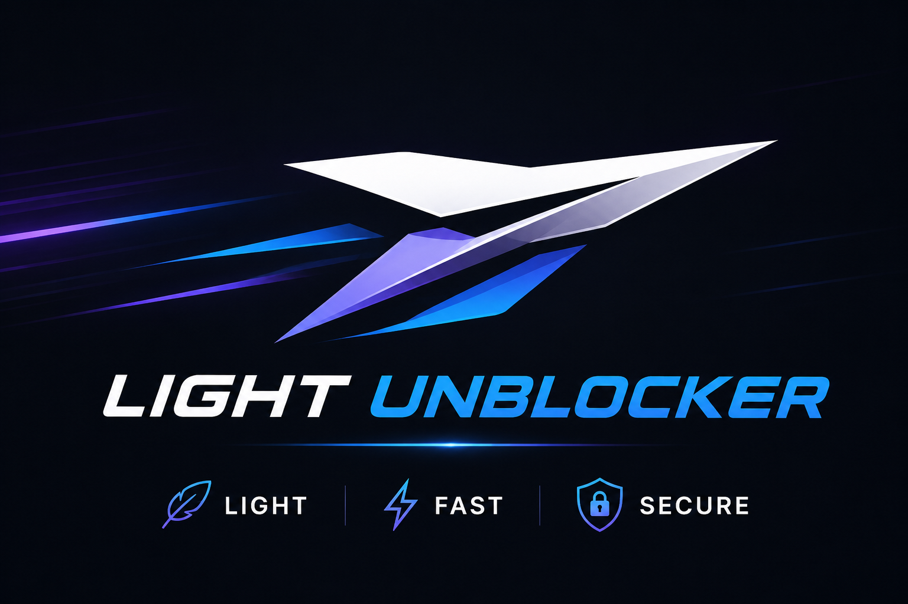

Light Unblocker is a lightweight web proxy that allows you to surf the web unblocked. It is designed to be fast, secure, and easy to use. You can use it to access blocked websites, bypass censorship, and protect your privacy online.